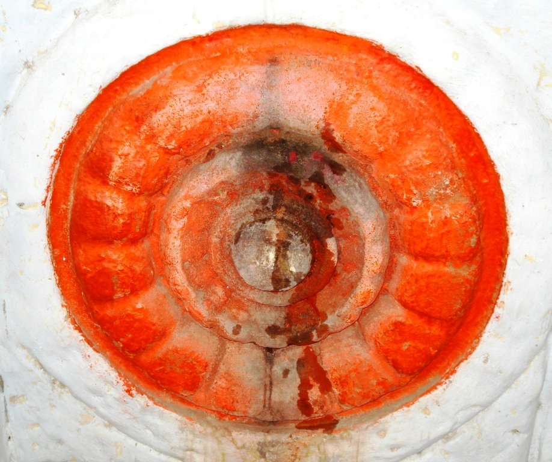

<?xml version="1.0" encoding="UTF-8"?><rss version="2.0"
	xmlns:content="http://purl.org/rss/1.0/modules/content/"
	xmlns:wfw="http://wellformedweb.org/CommentAPI/"
	xmlns:dc="http://purl.org/dc/elements/1.1/"
	xmlns:atom="http://www.w3.org/2005/Atom"
	xmlns:sy="http://purl.org/rss/1.0/modules/syndication/"
	xmlns:slash="http://purl.org/rss/1.0/modules/slash/"
	>

<channel>
	<title>Aditya Temples &#8211; Varanasi Temples</title>
	<atom:link href="index.html" rel="self" type="application/rss+xml" />
	<link>../../../index.html</link>
	<description>Temples of Varanasi as referred to in Kashi Khand</description>
	<lastBuildDate>Thu, 19 Jun 2025 05:16:46 +0000</lastBuildDate>
	<language>en-US</language>
	<sy:updatePeriod>hourly</sy:updatePeriod>
	<sy:updateFrequency>1</sy:updateFrequency>
	<generator>https://wordpress.org/?v=4.6.29</generator>
	<item>
		<title>YAMA ADITYA</title>
		<link>../../../aditya-temples/yama-aditya/index.html</link>
		<pubDate>Tue, 11 May 2010 08:09:59 +0000</pubDate>
		<dc:creator><![CDATA[admin]]></dc:creator>
				<category><![CDATA[Aditya Temples]]></category>
		<category><![CDATA[Yama Aditya]]></category>
		<category><![CDATA[aditya]]></category>
		<category><![CDATA[khakholokhaditya]]></category>
		<category><![CDATA[yama aditya]]></category>
		<category><![CDATA[yameshwar]]></category>

		<guid isPermaLink="false">../../../p=547.html</guid>
		<description><![CDATA[Once Yamraj installed one Shiv Ling and one idol for Lord Surya in Yam Teerth and performed rigorous Tapas. The Shiv Ling came to be known as Yameshwar and the idol of Lord Surya came to be known as Yama Aditya. Kashi Khand states that if a person takes bath in Yama Teerth (now Ganges [&#8230;]]]></description>
				<content:encoded><![CDATA[<p>Once Yamraj installed one Shiv Ling and one idol for Lord Surya in Yam Teerth and performed rigorous Tapas. The Shiv Ling came to be known as Yameshwar and the idol of Lord Surya came to be known as Yama Aditya.</p>
<p>Kashi Khand states that if a person takes bath in Yama Teerth (now Ganges at Sankata Ghat), worships Yameshwar and Yama Aditya, such devotee will never experience the tortures of Hell. (He will reach heaven after his death).</p>
<p></p>
<p style="text-align: center;"><strong>(YAMA ADITYA)</strong></p>
<p>On an auspicious day when Tuesday, Bharani Nakshatra and Chaturdasi (14<sup>th</sup> day after Amavasya or Poornima) coincide, if a person performs rituals for his forefathers, he will attain all round happiness.  It is believed that forefathers eagerly wait for their descendents to take bath in Yam Teerth and perform the rituals on the aforesaid day.</p>
<p>A person who prays to Yama Aditya and Yameshwar after taking bath in Yama Teerth will always remain happy.</p>
<p>&nbsp;</p>
<p><strong>&#8212;&#8212;&#8212;&#8212;&#8212;&#8212;&#8212;&#8212;&#8212;&#8212;&#8212;&#8212;&#8212;&#8212;&#8212;&#8212;&#8212;&#8212;&#8212;&#8212;&#8212;&#8212;&#8212;&#8212;&#8212;&#8212;&#8212;&#8212;&#8212;&#8212;&#8212;&#8212;&#8212;&#8212;-</strong></p>
<p><strong> </strong></p>
<p><span style="text-decoration: underline;"><strong>Kashi Khand, Chapter 51, Shlok 106</strong></span></p>
<p><strong> </strong></p>
<p><strong>यमेशात्पश्चिमे  भागे वीरेशात्पूर्वतो </strong></p>
<p><strong>यमादित्यं नरो दृष्ट्वा यमलोकं न पश्यति</strong></p>
<p>&nbsp;</p>
<p><strong>Yamaditya, whose darshan ensures that one never has to see Yamaloka ever, is situated on the western side of Yameshwar  and the eastern side of  (Atma) Veereshwar.</strong></p>
<p><strong> </strong></p>
<p><strong>&#8212;&#8212;&#8212;&#8212;&#8212;&#8212;&#8212;&#8212;&#8212;&#8212;&#8212;&#8212;&#8212;&#8212;&#8212;&#8212;&#8212;&#8212;&#8212;&#8212;&#8212;&#8212;&#8212;&#8212;&#8212;&#8212;&#8212;&#8212;&#8212;&#8212;&#8212;&#8212;&#8212;&#8212;&#8212;</strong></p>
<p>&nbsp;</p>
<p><strong><span style="text-decoration: underline;">LOCATION OF YAMA ADITYA</span></strong></p>
<p>Yama Aditya is located at No. Ck.7/135, on the steps leading to  Sankata Ghat.  People can travel upto Chowk by rickshaw and travel to this place on foot.  Sankata Devi temple is an important landmark. Alternatively, they can have a boat ride upto Sankata Ghat and climb the steps.</p>
<p>&nbsp;</p>
<p><strong>Please watch our YouTube Video about Yama Aditya at following Link</strong></p>
<p>&nbsp;</p>
<p><a href="https://www.youtube.com/watch?v=YQ82l_QM0Wg&amp;t=34s">https://www.youtube.com/watch?v=YQ82l_QM0Wg&amp;t=34s</a></p>
<p>&nbsp;</p>
<p>&nbsp;</p>
<p><strong><span style="text-decoration: underline;">TYPES OF POOJA PERFORMED</span></strong></p>
<p>Devotees can have darshan practically throughout the day.</p>
]]></content:encoded>
			</item>
		<item>
		<title>VRIDDH ADITYA</title>
		<link>../../../aditya-temples/vriddh-aditya/index.html</link>
		<pubDate>Tue, 11 May 2010 08:08:20 +0000</pubDate>
		<dc:creator><![CDATA[admin]]></dc:creator>
				<category><![CDATA[Aditya Temples]]></category>
		<category><![CDATA[Vriddh Aditya]]></category>
		<category><![CDATA[mir ghat]]></category>
		<category><![CDATA[tulsi manas mandir]]></category>
		<category><![CDATA[visalakshi]]></category>
		<category><![CDATA[vriddh]]></category>

		<guid isPermaLink="false">../../../p=545.html</guid>
		<description><![CDATA[According to Kashi Khand, once a staunch devotee called Harit, who was very old in age, stationed himself near Visalakshi Devi and intensely prayed to Lord Surya. After a long time, Lord Surya appeared before him and told the old man that he (Lord Surya) was pleased and the old man may seek any divine [&#8230;]]]></description>
				<content:encoded><![CDATA[<p>According to Kashi Khand, once a staunch devotee called Harit, who was very old in age, stationed himself near Visalakshi Devi and intensely prayed to Lord Surya. After a long time, Lord Surya appeared before him and told the old man that he (Lord Surya) was pleased and the old man may seek any divine boon.</p>
<p>The old man said “for performing Tap (Tapas – rigorous ascetic practices), a devotee needs sufficient strength. There is nothing in this world as good as Tapas which gives prosperity, enlightenment and all joys.  However, one needs to be young and virile enough for carrying out Tapas.” Accordingly, the old man requested Lord Surya that he should be made young.</p>
<p></p>
<p style="text-align: center;"><strong>(VRIDDH ADITYA &#8211; INNER PHOTO)</strong></p>
<p>Lord Surya was deeply moved by the sincerity and devotion of the old man and he granted boon accordingly. Thus the old man became young. Since Lord Surya was eulogized  by an old man at that place, the Lord came to be known as Vriddh Aditya at that place.  According to Kashi Khand, a person who regularly prays to Vriddh Aditya will always remain energetic like a young man.</p>
<p></p>
<p>&nbsp;</p>
<p style="text-align: center;"><strong>(VRIDDH ADITYA &#8211; OUTSIDE PHOTO)</strong></p>
<p>&nbsp;</p>
<p><strong>&#8212;&#8212;&#8212;&#8212;&#8212;&#8212;&#8212;&#8212;&#8212;&#8212;&#8212;&#8212;&#8212;&#8212;&#8212;&#8212;&#8212;&#8212;&#8212;&#8212;&#8212;&#8212;&#8212;&#8212;&#8212;&#8212;&#8212;&#8212;&#8212;&#8212;&#8212;&#8212;&#8212;&#8212;-</strong></p>
<p><strong> </strong></p>
<p><strong>Kashi Khand, Chapter 51, Shlok 43</strong></p>
<p><strong> </strong></p>
<p><strong>वृद्धादित्यं नमस्कृत्य वाराणस्यां रवौ नर:</strong></p>
<p><strong>लभेदभीप्सितां सिद्धिं न क्वचिद्दुर्गतिं लभेत्</strong></p>
<p>&nbsp;</p>
<p><strong>Whoever worships Vridhaditya on Sundays in Varanasi region, he will never suffer misery. That person  gets his desired achievement/accomplishment. </strong></p>
<p><strong> </strong></p>
<p><strong>&#8212;&#8212;&#8212;&#8212;&#8212;&#8212;&#8212;&#8212;&#8212;&#8212;&#8212;&#8212;&#8212;&#8212;&#8212;&#8212;&#8212;&#8212;&#8212;&#8212;&#8212;&#8212;&#8212;&#8212;&#8212;&#8212;&#8212;&#8212;&#8212;&#8212;&#8212;&#8212;&#8212;&#8212;&#8212;</strong></p>
<p>&nbsp;</p>
<p><strong><span style="text-decoration: underline;">LOCATION OF VRIDDH ADITYA</span></strong></p>
<p>Vriddh Aditya is located at D-3/15, South of Bare Hanumanji at Mir Ghat.  Devotees can approach this place by traveling upto Dasaswamdh Vishwanath Gulli by rickshaw and then on foot in the Gully.  Alternatively, they can take a boat ride upto Mir Ghat and climb up the stairs.</p>
<p>Location of Vriddh Aditya temple as per Google Maps is as per the following Link :<a href="https://www.google.com/maps/place/Vriddha+Aditya+Mandir+-+Dwadash+Aditya+Kashi+Khand/@25.309506,83.0095866,17z/data=!3m1!4b1!4m5!3m4!1s0x398e2f5290925235:0xaf09add8cf2f3ca7!8m2!3d25.3095014!4d83.0117713">https://www.google.com/maps/place/Vriddha+Aditya+Mandir+-+Dwadash+Aditya+Kashi+Khand/@25.309506,83.0095866,17z/data=!3m1!4b1!4m5!3m4!1s0x398e2f5290925235:0xaf09add8cf2f3ca7!8m2!3d25.3095014!4d83.0117713</a></p>
<p>&nbsp;</p>
<p>&nbsp;</p>
<h3><strong>Please watch our YouTube Video about Vriddh Aditya at following Link</strong></h3>
<p><strong> </strong></p>
<p><a href="https://www.youtube.com/watch?v=YQ82l_QM0Wg&amp;t=34s">https://www.youtube.com/watch?v=YQ82l_QM0Wg&amp;t=34s</a></p>
<p>&nbsp;</p>
<p>&nbsp;</p>
<p><strong><span style="text-decoration: underline;">TYPES OF POOJA PERFORMED</span></strong></p>
<p>The temple is open for worship from 06.30 a.m. to 09.30 p.m.  The timings may change. While the idol is situated inside the premises, there is a Surya Chakra in the outer wall of the premises. Devotees can pray/perform pooja on their own.</p>
]]></content:encoded>
			</item>
		<item>
		<title>VIMAL ADITYA</title>
		<link>../../../aditya-temples/vimal-aditya/index.html</link>
		<pubDate>Tue, 11 May 2010 08:06:29 +0000</pubDate>
		<dc:creator><![CDATA[admin]]></dc:creator>
				<category><![CDATA[Aditya Temples]]></category>
		<category><![CDATA[Vimal Aditya]]></category>
		<category><![CDATA[aditya]]></category>
		<category><![CDATA[vimal adithya]]></category>
		<category><![CDATA[vimal aditya]]></category>
		<category><![CDATA[vimaladitya]]></category>

		<guid isPermaLink="false">../../../p=543.html</guid>
		<description><![CDATA[Long time back, one person named Vimal was residing in a hilly place.  Due to some sins committed in his earlier life, he was afflicted with Leprosy.  He had heard about Kashi and he left his family and belongings, came to Kashi and started worshipping Lord Surya with all fervour. He performed all sorts of [&#8230;]]]></description>
				<content:encoded><![CDATA[<p>Long time back, one person named Vimal was residing in a hilly place.  Due to some sins committed in his earlier life, he was afflicted with Leprosy.  He had heard about Kashi and he left his family and belongings, came to Kashi and started worshipping Lord Surya with all fervour.</p>
<p>He performed all sorts of Poojas, Pushp Archana and other rituals as are prescribed for Lord Surya.  His pious actions pleased Lord Surya who appeared before him and with his divine blessings, Vimal was cured of his ailment (Leprosy).  Lord Surya also offered a divine wish to Vimal.</p>
<p></p>
<p>&nbsp;</p>
<p style="text-align: center;"><strong>(VIMAL ADITYA)</strong></p>
<p>Vimal appealed to Lord Surya that all his devotees should never be afflicted by this dreaded disease.  They should not face any sort of difficulties in their life.  Lord Surya granted accordingly and stated that devotees will know him as Vimal Aditya at that place.  Further, Lord Surya will always remain in the idol of Vimal Aditya and will continue to bless his devotees.</p>
<p>According to Kashi Khand, a mere darshan of Vimal Aditya is capable enough to cure all kinds of diseases.</p>
<p>&nbsp;</p>
<p><strong>&#8212;&#8212;&#8212;&#8212;&#8212;&#8212;&#8212;&#8212;&#8212;&#8212;&#8212;&#8212;&#8212;&#8212;&#8212;&#8212;&#8212;&#8212;&#8212;&#8212;&#8212;&#8212;&#8212;&#8212;&#8212;&#8212;&#8212;&#8212;&#8212;&#8212;&#8212;&#8212;&#8212;&#8212;-</strong></p>
<p><strong>Kashi Khand, Chapter 51, Shlok 97</strong></p>
<p><strong>विमलादित्य इत्याख्या भक्तानां वरदा सदा</strong></p>
<p><strong>सर्वव्याधिनिहन्त्री च सर्वपापक्षयंकरी  </strong></p>
<p>&nbsp;</p>
<p><strong>According to Lord Surya, this deity will be  called Vimal Aditya and this idol will always bless the devotees, destroy all their illness and cleanse all their sins. </strong></p>
<p><strong>&#8212;&#8212;&#8212;&#8212;&#8212;&#8212;&#8212;&#8212;&#8212;&#8212;&#8212;&#8212;&#8212;&#8212;&#8212;&#8212;&#8212;&#8212;&#8212;&#8212;&#8212;&#8212;&#8212;&#8212;&#8212;&#8212;&#8212;&#8212;&#8212;&#8212;&#8212;&#8212;&#8212;&#8212;&#8212;</strong></p>
<p>&nbsp;</p>
<p><strong><span style="text-decoration: underline;">LOCATION OF VIMAL ADITYA</span></strong></p>
<p>Vimal Aditya is located at No. D-35/273, Gully behind Khari Kuan, Jangambari, near Godowlia.  People can reach this place by rickshaw.</p>
<p>&nbsp;</p>
<h3><strong>Please watch our YouTube Video about Vimal Aditya at following Link</strong></h3>
<p>&nbsp;</p>
<p><a href="https://www.youtube.com/watch?v=zGk_LHQDrTU&amp;t=5s">https://www.youtube.com/watch?v=zGk_LHQDrTU&amp;t=5s</a></p>
<p>&nbsp;</p>
<p>&nbsp;</p>
<p><strong><span style="text-decoration: underline;">TYPES OF POOJA PERFORMED</span></strong></p>
<p>The place of worship remains practially open throughout.  Shri Rohit Kapooria is can be contacted at his cell number 7839361621 for performing any pooja or  Jap at this temple.</p>
]]></content:encoded>
			</item>
		<item>
		<title>UTTARARK ADITYA</title>
		<link>../../../aditya-temples/uttarark-aditya/index.html</link>
		<pubDate>Tue, 11 May 2010 08:05:09 +0000</pubDate>
		<dc:creator><![CDATA[admin]]></dc:creator>
				<category><![CDATA[Aditya Temples]]></category>
		<category><![CDATA[Uttarark Aditya]]></category>
		<category><![CDATA[priya]]></category>
		<category><![CDATA[tara]]></category>

		<guid isPermaLink="false">../../../p=541.html</guid>
		<description><![CDATA[According to Kashi Khand, Chapter 47, long time back, one Brahmin named Priyavrat was living in Kashi alongwith his beautiful wife named Shubhavradha.  Both were very religious and were blessed with a beautiful girl child, who was named as Sulakshana. The girl was born in Moola Star, 1st Charan (Padam) with Guru in fourth house. [&#8230;]]]></description>
				<content:encoded><![CDATA[<p>According to Kashi Khand, Chapter 47, long time back, one Brahmin named Priyavrat was living in Kashi alongwith his beautiful wife named Shubhavradha.  Both were very religious and were blessed with a beautiful girl child, who was named as Sulakshana. The girl was born in Moola Star, 1<sup>st</sup> Charan (Padam) with Guru in fourth house. This combination is not supposed to be auspicious.</p>
<p>The child grew up to be a beautiful girl, well versed in all household activities. When she approached the age of marriage, her father got worried because he had to find a suitable match for her, mainly because of her birth in Moola star.  Due to constant worries he fell sick and as there was no cure for worries, he died in due course.  Overcome with grief, the girl’s mother also died, leaving the girl all alone in the world.</p>
<p>The girl dutifully performed the rites of her parents and she started praying to Lord Surya in his form of Uttarark Aditya. She underwent severe penance for a considerably long time and observed that a white goat used to come daily and constantly stare at her. The goat used to take bath in the Kund in the morning, wait for the whole day and in the evening,  it used to eat dry grass, drink water from the Uttarark Kund and go back.  This went on for several years.</p>
<p></p>
<p style="text-align: center;"><strong>(UTTARARK ADITYA)</strong></p>
<p>One day Lord Shiva and Goddess Parvaty were travelling above and they saw this girl (who had gone lean), praying before Uttarark Aditya.  Both Lord Shiva and Goddess Parvaty were deeply moved by the prayers of Sulakshana and Lord Shiva offered the girl a divine wish.</p>
<p>Sulakshana thought for a moment and saw the Goat standing nearby.  She requested Lord Shiva to grant a boon to the Goat instead of herself.  Goddess Parvaty was moved by the philanthropy exhibited by Sulakshana and ordained that Sulakshana will always be with Goddess Parvaty as a companion.  The goat will take rebirth as daughter of Kashi Raja in consideration of its devotion to Uttarark Kund.</p>
<p>According to Kashi Khand, Goddess Parvaty stated that the Kund will be remembered for the sincerity of the Goat (because the Goat was regularly taking bath in the Kund even during severe winter months) and that all devotees should take bath in the above Kund in Paushya Month (December-January) on Sundays and pray to Uttarark Aditya.  By performing the above ritual, they will be divinely blessed.  The Kund was named Barkari Kund (reference : Sankshipta Skanda Puran, Gita Press, Page No. 831). The Kund is now known as Bakria Kund in local parlance.</p>
<h3>LOCATION OF UTTARARK ADITYA</h3>
<p>Uttarark Aditya is located in Alaipur, Bakaria Kund, near Varanasi City Station. Devotees can travel upto the place by Auto/Cycle Rickshaw.</p>
<h3></h3>
<h3><strong>Please watch our YouTube Video about Uttarark Aditya at following Link</strong></h3>
<h3></h3>
<p><a href="https://www.youtube.com/watch?v=zGk_LHQDrTU&amp;t=5s">https://www.youtube.com/watch?v=zGk_LHQDrTU&amp;t=5s</a></p>
<h3></h3>
<p>&nbsp;</p>
<h3>TYPES OF POOJA</h3>
<p>The place of worship is open from 05.00 a.m. to 12.00 noon and from 05.00 p.m. to 10.00 p.m.  Aarti is held at 08.00 a.m. in the morning.</p>
<p><strong><span style="text-decoration: underline;">POOJARIES OF THE TEMPLE</span></strong></p>
<p>Shri Ashok Tripathi is the poojari of the temple and he can be contacted in his Cell No.(0)9305041589.</p>
]]></content:encoded>
			</item>
		<item>
		<title>SAAMBA ADITYA</title>
		<link>../../../aditya-temples/saamba-aditya/index.html</link>
		<pubDate>Tue, 11 May 2010 08:03:08 +0000</pubDate>
		<dc:creator><![CDATA[admin]]></dc:creator>
				<category><![CDATA[Aditya Temples]]></category>
		<category><![CDATA[Saamba Aditya]]></category>
		<category><![CDATA[aditya]]></category>
		<category><![CDATA[saamba]]></category>

		<guid isPermaLink="false">../../../p=539.html</guid>
		<description><![CDATA[According to Kashi Khand, Once Sage Narada traveled to Dwaraka Puri and he was fondly welcomed by the mind born  sons of Lord Krishna.  They exhibited hospitality of the highest order and Narad was pleased.  However, one son named Saamba remained aloof and did not pay any respect to Narad. Lord Krishna welcomed Sage Narad [&#8230;]]]></description>
				<content:encoded><![CDATA[<p>According to Kashi Khand, Once Sage Narada traveled to Dwaraka Puri and he was fondly welcomed by the mind born  sons of Lord Krishna.  They exhibited hospitality of the highest order and Narad was pleased.  However, one son named Saamba remained aloof and did not pay any respect to Narad.</p>
<p>Lord Krishna welcomed Sage Narad in the former’s palace with all humility.  After exchanging all formalities/pleasantries, Sage Narad brought Saamba’s behaviour to the notice of Lord Krishna.  Sage Narad went a step ahead, stating that Saamba was a strong and handsome boy and was capable of seducing various ladies in and around the palace.</p>
<p>Soon Narad left the palace and Lord Krishna started keeping a close watch on Saamba but nothing untoward was observed in Saamba’s behaviour. However, the surveillance went on for quite some time.</p>
<p>After some days, Narad again visited Dwarka Puri and precisely at that time, Lord Krishna was in his personal chambers alongwith various ladies.  Narad called Saamba, who was loitering outside, and told him to inform Lord Krishna about his arrival. Saamba hesitated for a while. It was a double whammy for him.  On the one hand, if he barges in and disturbs Lord Krishna, the latter may get angry.  On the other hand, if he disobeys Narad, he may get angry because on the earlier occasion he had not respected Narad.</p>
<p>With a dilemma, he went inside Lord Krishna’s private quarters, not knowing that Narad was following him.  Both of them disturbed Lord Krishna who was in a compromising position.  Lord Krishna suddenly got up very embarrassed.  All the girls surrounding him were also equally embarrassed. Saamba silently left the place.</p>
<p>Narad gave a wrong interpretation of the events to Lord Krishna stating that the ladies who were with Lord Krishna were indeed seduced by the appearance of Saamba. Lord Krishna got infuriated and cursed Saamba that he will be inflicted with Leprosy.  However, Saamba pleaded innocence and Lord Krishna was very much moved.  He told Saamba that to get rid of this curse, he should go to Kashi and pray to Lord Surya.</p>
<p>Accordingly, Saamba came to Kashi, dug a Kund which was called Saamba Kund and undertook rigorous penance and pooja of Lord Surya.  In due course, he was cured of this dreaded disease.  Lord Aditya who is present at this place came to be called Saamba Aditya.</p>
<p></p>
<p style="text-align: center;"><strong>(SAAMBA ADITYA)</strong></p>
<p>According to Kashi Khand Chapter 48, a person who takes bath in Saamba Kund religiously on Sundays at sunrise and prays  to Saamba Aditya will get cured of any incurable disease, any married lady performing such prayers will always remain Sumangali (Suhagin-lady whose husband is alive) and childless couple will be blessed with child.</p>
<p>Saamba Kund is now known as Surya Kund / Suraj Kund.</p>
<p>&nbsp;</p>
<p><strong>&#8212;&#8212;&#8212;&#8212;&#8212;&#8212;&#8212;&#8212;&#8212;&#8212;&#8212;&#8212;&#8212;&#8212;&#8212;&#8212;&#8212;&#8212;&#8212;&#8212;&#8212;&#8212;&#8212;&#8212;&#8212;&#8212;&#8212;&#8212;&#8212;&#8212;&#8212;&#8212;&#8212;&#8212;-</strong></p>
<p><strong> </strong></p>
<p><span style="text-decoration: underline;"><strong>Kashi Khand, Chapter 48, Shlok 48</strong></span></p>
<p><strong> </strong></p>
<p><strong>साम्बकुण्डे नर: स्नात्वा रविवारेऽरुणोदये  </strong></p>
<p><strong>सांबादित्यं च संपूज्य व्याधिभिर्नाऽभिभूयते</strong></p>
<p>&nbsp;</p>
<p><strong>If a person takes a holy dip in Samba Kund and worships Sambaditya with devotion at the time of sunrise on Sunday, he never suffers from diseases. </strong></p>
<p><strong> </strong></p>
<p><strong>&#8212;&#8212;&#8212;&#8212;&#8212;&#8212;&#8212;&#8212;&#8212;&#8212;&#8212;&#8212;&#8212;&#8212;&#8212;&#8212;&#8212;&#8212;&#8212;&#8212;&#8212;&#8212;&#8212;&#8212;&#8212;&#8212;&#8212;&#8212;&#8212;&#8212;&#8212;&#8212;&#8212;&#8212;&#8212;</strong></p>
<p>&nbsp;</p>
<h3>LOCATION OF SAAMBA ADITYA</h3>
<p>Saamba Aditya is located at D-51/90 Surya Kund (Suraj Kund).  This is a famous locality.  Devotees can travel upto this place in a  cycle rickshaw.</p>
<h3></h3>
<h3><strong>Please watch our YouTube Video about Saamba Aditya at following Link</strong></h3>
<h3></h3>
<p><a href="https://www.youtube.com/watch?v=zGk_LHQDrTU&amp;t=5s">https://www.youtube.com/watch?v=zGk_LHQDrTU&amp;t=5s</a></p>
<h3></h3>
<h3></h3>
<h3>TYPES OF POOJA</h3>
<p>The place is open for worship from 06.30 a.m. to 01.00 p.m. and from 07.00 p.m. to 09.00 p.m..  Special importance is attached to Magh month (Feb-March) on Sundays when Navami conjoins.  Equally important is Chaitra month (March-April) Sundays.</p>
]]></content:encoded>
			</item>
		<item>
		<title>MAYUKH ADITYA</title>
		<link>../../../aditya-temples/mayukh-aditya/index.html</link>
		<pubDate>Tue, 11 May 2010 08:01:12 +0000</pubDate>
		<dc:creator><![CDATA[admin]]></dc:creator>
				<category><![CDATA[Aditya Temples]]></category>
		<category><![CDATA[Mayukh Aditya]]></category>
		<category><![CDATA[aditya]]></category>
		<category><![CDATA[mayukh]]></category>

		<guid isPermaLink="false">../../../p=537.html</guid>
		<description><![CDATA[Once Lord Surya installed a Shiv Ling known as Gabhasteeshwar and a devi idol known as Mangala Gauri at Panchanada Teerth (Panchganga Ghat) and started immensely praying to  Lord Shiva.  (Importance of Panchganga Ghat is described under River Ganga and Teerths Categories). The intensity of Lord Surya’s prayers started reflecting in the extreme heat generated [&#8230;]]]></description>
				<content:encoded><![CDATA[<p>Once Lord Surya installed a Shiv Ling known as Gabhasteeshwar and a devi idol known as Mangala Gauri at Panchanada Teerth (Panchganga Ghat) and started immensely praying to  Lord Shiva.  (Importance of Panchganga Ghat is described under River Ganga and Teerths Categories).</p>
<p>The intensity of Lord Surya’s prayers started reflecting in the extreme heat generated thereby.  Sunrays started getting warmer and warmer. Finally it became extremely unbearable for all living beings and all physical activities practically came to a standstill.</p>
<p></p>
<p style="text-align: center;"><strong>(MAYUKH ADITYA)</strong></p>
<p>Lord Shiva and Goddess Parvaty came to know about this and they appeared in person in front of Lord Surya.  Lord Shiva gently touched Lord Surya, whereupon the latter’s extreme heat slowly subsided and he became more or less cool. Lord Surya opened his eyes and started singing praises of Goddess Parvaty and Lord Shiva whereupon both of them became extremely happy.  They granted several divine wishes to Lord Surya.</p>
<p>Lord Shiva told Lord Surya that when the latter was performing pooja of the former, only the sunrays were visible and the body of Lord Surya was not visible.  Accordingly, Lord Surya will be called Mayukh Aditya.  Mayukh means effulgence. Lord Shiva also stated that a devotee who worships Mayukh Aditya on Sundays will never fall ill. (Kashi Khand, Chapter 49).</p>
<p>&nbsp;</p>
<p><strong>&#8212;&#8212;&#8212;&#8212;&#8212;&#8212;&#8212;&#8212;&#8212;&#8212;&#8212;&#8212;&#8212;&#8212;&#8212;&#8212;&#8212;&#8212;&#8212;&#8212;&#8212;&#8212;&#8212;&#8212;&#8212;&#8212;&#8212;&#8212;&#8212;&#8212;&#8212;&#8212;&#8212;&#8212;-</strong></p>
<p><strong> </strong></p>
<p><span style="text-decoration: underline;"><strong>Kashi Khand, Chapter 49, Shlok 94</strong></span></p>
<p><strong> </strong></p>
<p><strong>त्वदर्चनान्नृणां  कश्चिन्न व्याधि: प्रभविष्यति </strong></p>
<p><strong>भविष्यति न दारिद्रयं रविवारे त्वदोक्षणात्</strong></p>
<p>&nbsp;</p>
<p><strong>Lord Shiva says, by performing your (Mayukh Aditya’s) pooja, devotees will be free from all diseases and by worshipping you on Sunday, devotees will not face poverty.</strong></p>
<p><strong> </strong></p>
<p><strong>&#8212;&#8212;&#8212;&#8212;&#8212;&#8212;&#8212;&#8212;&#8212;&#8212;&#8212;&#8212;&#8212;&#8212;&#8212;&#8212;&#8212;&#8212;&#8212;&#8212;&#8212;&#8212;&#8212;&#8212;&#8212;&#8212;&#8212;&#8212;&#8212;&#8212;&#8212;&#8212;&#8212;&#8212;&#8212;</strong></p>
<p>&nbsp;</p>
<p><strong><span style="text-decoration: underline;">LOCATION OF MAYUKH ADITYA</span></strong></p>
<p>Mayukh Aditya is located at No. K-24/34, Mangala Gauri Temple, Panchganga Ghat.  Devotees can travel upto Bhaironath (Kaal Bhairav) by rickshaw and walk on foot upto this temple through labyrinthine lanes. This walk usually takes about twenty to thirty minutes.   Alternatively, they can take a boat ride upto Balaji Ghat/Panchganga Ghat and walk up the stairs.</p>
<p>The idol of Mayukh Aditya always remains moist and cool. If we physically remove the moisture and make it dry, the idol will again become moist.  The reason for this is Lord Shiva touched Lord Surya to reduce his intense heat (as mentioned above).  Old timers in and around the temple believe that the hidden river Dhootpapa is flowing beneath the surface, causing this moistness.</p>
<p>The temple also houses Gabhastheeshwar, Mangala Gauri and Mangal Vinayak. In the close vicinity are temples of Brahmacharini and Brahmeshwar.</p>
<h3></h3>
<h3><strong>Please watch our YouTube Video about Mayukh Aditya at following Link</strong></h3>
<p>&nbsp;</p>
<h3><a href="https://www.youtube.com/watch?v=3MiOW5wXASQ&amp;t=6s">https://www.youtube.com/watch?v=3MiOW5wXASQ&amp;t=6s</a></h3>
<p>&nbsp;</p>
<h3></h3>
<h3>TYPES OF POOJA</h3>
<p>The temple is open from 05.00 a.m. to 01.00 p.m. and from 03.00 p.m. to 10 p.m.  Aarties are performed in the evening.  For doing any special pooja etc., it is advisable to contact the Poojari.</p>
<h2>POOJARIS OF THE TEMPLE</h2>
<p>Shri Manoj Kumar Pandey is the chief priest and his cell number is (0)9305645502.  Other priest is Shri Umesh Kumar Sharma whose cell number is (0)9450284728.</p>
]]></content:encoded>
			</item>
		<item>
		<title>LOLARK ADITYA</title>
		<link>../../../aditya-temples/lolark-aditya/index.html</link>
		<comments>https://varanasitemples.in/aditya-temples/lolark-aditya/#comments</comments>
		<pubDate>Tue, 11 May 2010 07:59:32 +0000</pubDate>
		<dc:creator><![CDATA[admin]]></dc:creator>
				<category><![CDATA[Aditya Temples]]></category>
		<category><![CDATA[Lolark Aditya]]></category>
		<category><![CDATA[aditya]]></category>
		<category><![CDATA[lolar]]></category>
		<category><![CDATA[lolark]]></category>
		<category><![CDATA[lolark aditya]]></category>

		<guid isPermaLink="false">../../../p=535.html</guid>
		<description><![CDATA[Lolark Aditya is situated in the southern part of Kashi near Assi-Ganga Sangam, near Lolark Kund.  Lolark Kund has been given great importance in Kashi Khand. In ancient times, Lolark Kund was believed to be in confluence with Ganga and Assi a rivulet but now this is in form of a Kund (Pond) only.  Even [&#8230;]]]></description>
				<content:encoded><![CDATA[<p>Lolark Aditya is situated in the southern part of Kashi near Assi-Ganga Sangam, near Lolark Kund.  Lolark Kund has been given great importance in Kashi Khand. In ancient times, Lolark Kund was believed to be in confluence with Ganga and Assi a rivulet but now this is in form of a Kund (Pond) only.  Even now, during rainy days, Ganges water enters the Kund through some underground source.</p>
<p></p>
<p style="text-align: center;"><strong>(LOLARK ADITYA)</strong></p>
<p>&nbsp;</p>
<p>Great importance is attached to taking bath in this Pond in Magha Month when Shukla Shashti or Saptmi (sixth or seventh day after Amavasya) coincides with Sunday.  Bathing on such a day in this kund and performing puja etc. will grant the devotees all their desires.  The devotee’s sins accumulated over seven previous births will be cleansed away by the above religious act. (Kashi Khand, Chapter 46).</p>
<p>A person who religiously prays to Lolark Aditya on every Sunday is absolved of all his sins and all his skin ailments will be healed. (Kashi Khand, Chapter 46).</p>
<h2>LOCATION OF LOLARK ADITYA</h2>
<p>Lolark Aditya/Lolark Kund is located near Tulsi Ghat. Persons can travel upto Marwadi Seva Sangh, Assi in a  rickshaw and walk on foot upto Lolark Kund. Alternatively, they can have a boat ride upto Tulsi Ghat and climb the steps.</p>
<h3></h3>
<h3><strong>Please watch our YouTube Video about Lolark  Aditya at following Link</strong></h3>
<h3></h3>
<p><a href="https://www.youtube.com/watch?v=3MiOW5wXASQ&amp;t=6s">https://www.youtube.com/watch?v=3MiOW5wXASQ&amp;t=6s</a></p>
<p>&nbsp;</p>
<p>&nbsp;</p>
<h3>TYPES OF POOJAS</h3>
<p>The place is open self worship practically twenty four hours daily.  Special importance is attached to prayers by self on Sundays.  Presently, on a particular day every year (Lolark Chat) which falls in the Bhadrapad Month Shukla Paksha Shashti (6<sup>th</sup> day after Amavasya) devotees come in large numbers for taking bath in Lolark Kund.  Further, Margashirsha Month,  Shukla Paksha Shashti (6<sup>th</sup> day after Amavasya), is also an important day.</p>
]]></content:encoded>
			<wfw:commentRss>../../../aditya-temples/lolark-aditya/feed/index.html</wfw:commentRss>
		<slash:comments>1</slash:comments>
		</item>
		<item>
		<title>KHAKHOLKH ADITYA</title>
		<link>../../../aditya-temples/khakholkh-aditya/index.html</link>
		<pubDate>Tue, 11 May 2010 07:58:13 +0000</pubDate>
		<dc:creator><![CDATA[admin]]></dc:creator>
				<category><![CDATA[Aditya Temples]]></category>
		<category><![CDATA[Khakholkh Aditya]]></category>
		<category><![CDATA[aditya]]></category>
		<category><![CDATA[mrit]]></category>
		<category><![CDATA[teerth]]></category>
		<category><![CDATA[trilochan]]></category>
		<category><![CDATA[trilochaneshwar]]></category>

		<guid isPermaLink="false">../../../p=533.html</guid>
		<description><![CDATA[Sage Kashyap had many wives of which two were Kadru and Vinata. Kadru gave birth to children who were snakes and Vinata who was a huge bird gave birth to Garuda. Both the sisters were playful. While Kadru was cunning, Vinata was very innocent.  Once Kadru, with an ulterior motive in her mind, asked Vinata [&#8230;]]]></description>
				<content:encoded><![CDATA[<p>Sage Kashyap had many wives of which two were Kadru and Vinata. Kadru gave birth to children who were snakes and Vinata who was a huge bird gave birth to Garuda.</p>
<p>Both the sisters were playful. While Kadru was cunning, Vinata was very innocent.  Once Kadru, with an ulterior motive in her mind, asked Vinata to play a guess game and the sister who loses in the game will become slave to the winner.  Vinata agreed.  The guess game was “what is the colour of the Uchchaisrva, one of the horses which draws Lord Surya’s Chariot”.  It was well known that the colour was white and Vinata told accordingly.</p>
<p>But Kadru had other game plan in her mind. Upon her insistence, her children (snakes) twined themselves round the tail of the horse Uchchaisrva and started spewing venom.  The colour of the horse became grayish black.  Vinata lost  the game and was enslaved to Kadru and her snake sons.  She was very much ill treated and her son, Garuda was deeply pained at her woeful plight.</p>
<p>He appealed to the sons of Kadru to release his mother.  They agreed to do so on one condition that he should bring them Amrit (nectar).  Garuda knew this was an arduous task because Nectar was closely guarded by the Devas. However, as a dutiful son, he left for Dev Lok to accomplish the mission impossible.  In the process, he had to fight with Lord Vishnu.  Lord Vishnu was deeply touched by the respect which Garuda had for his mother as well as his filial obligations and told Garuda that henceforth he (Garuda) would be Lord Vishnu’s vehicle.</p>
<p>As regards Amrit, Lord Vishnu let Garuda take it to the snake children as ransom for release of his mother but cautioned that under no circumstances the snakes were to drink it.  Garuda took the amrit and gave it to the snake children.  His mother was freed by the snakes as per the agreement.  Before they could consume the amrit, Garuda told them that the amrit was the purest elixir and a person who wants to consume it should get himself purified first by having a holy bath.  Accordingly, the snakes placed the vessel containing the amrit on a mat made of dry grass and left for performing ablutions.  In their absence, Lord Vishnu took the vessel and vanished because it  did not belong to the snakes rightfully.</p>
<p>When the snakes returned they were anguished to see the vessel missing and with a view to getting at least a drop of amrit, they started licking the mat.  The dry grass was very sharp and it slit their tongues. To this day, snakes are born with a forked tongue because they tried to consume something which they had not rightfully earned.  Even now, elders advise people to take or consume only such things which have been rightfully earned.</p>
<p>Later, Vinata told her son Garuda that she must have committed some sin which made her  a slave.  She desired to go to Kashi for atonement of her sins. Garuda took her to Kashi  where Garuda installed a Shiv Ling and started praying ardently. Vinata started worshipping Lord Surya in his form as Khakholkh Aditya. Lord Shiva appeared in person and blessed Garuda stating that the latter would be known by everyone in the world as the vehicle/ride (vahana) of Lord Vishnu.</p>
<p></p>
<p style="text-align: center;"><strong>(KHAKHOLKH ADITYA)</strong></p>
<p>Lord Surya also appeared in person before Vinata and blessed her, whereupon Vinata was absolved of all her sins.  According to Kashi Khand, Chapter 50, Khakholkh Aditya finds mention in the proximity of Pilpila Teerth.</p>
<p>&nbsp;</p>
<p><strong>&#8212;&#8212;&#8212;&#8212;&#8212;&#8212;&#8212;&#8212;&#8212;&#8212;&#8212;&#8212;&#8212;&#8212;&#8212;&#8212;&#8212;&#8212;&#8212;&#8212;&#8212;&#8212;&#8212;&#8212;&#8212;&#8212;&#8212;&#8212;&#8212;&#8212;&#8212;&#8212;&#8212;&#8212;-</strong></p>
<p><strong> </strong></p>
<p><span style="text-decoration: underline;"><strong>Kashi Khand, Chapter 50, Shlok 150</strong></span></p>
<p><strong> </strong></p>
<p><strong>काश्यां पैशङ्गिले तीर्थे खखोल्कस्य विलोकनात्</strong></p>
<p><strong>नरश्चिन्तितमाप्नोति नीरोगो जायते क्षणात्</strong></p>
<p>&nbsp;</p>
<p><strong>By having darshan of Khakholkh Aditya near Pilpila Teerth (Trilochan area), the devotee is freed of all his sins, achieves all things desired and is cured of all illness.</strong></p>
<p><strong> </strong></p>
<p><strong>&#8212;&#8212;&#8212;&#8212;&#8212;&#8212;&#8212;&#8212;&#8212;&#8212;&#8212;&#8212;&#8212;&#8212;&#8212;&#8212;&#8212;&#8212;&#8212;&#8212;&#8212;&#8212;&#8212;&#8212;&#8212;&#8212;&#8212;&#8212;&#8212;&#8212;&#8212;&#8212;&#8212;&#8212;&#8212;</strong></p>
<p><strong><span style="text-decoration: underline;">LOCATION OF KHAKHOLKH ADITYA</span></strong></p>
<p>Khakholkh Aditya is located at Kameshwar Temple at A-2/9 North of Trilochan.  The temple is approachable from a famous locality called Machhodari.  Devotees can travel upto Macchodari, take a right circular turn, reach Birla Hospital and take a right turn. Kameshwar temple is located in a Gully there.</p>
<p>Pilpila Teerth mentioned in Kashi Khand is existent now in the form of a Koop (Well) near Trilochaneshwar.</p>
<p>&nbsp;</p>
<p><strong>Please watch our YouTube Video about Khakholkh  Aditya at following Link</strong></p>
<p>&nbsp;</p>
<p><a href="https://www.youtube.com/watch?v=3MiOW5wXASQ&amp;t=6s">https://www.youtube.com/watch?v=3MiOW5wXASQ&amp;t=6s</a></p>
<p>&nbsp;</p>
<p>&nbsp;</p>
<p><strong><span style="text-decoration: underline;">TYPES OF POOJAS</span></strong></p>
<p>The temple is open for worship from 05.00 a.m. to 12.00 Noon and 05.00 p.m. to 10.00 p.m.  Mangala Aarti is held at 5.30 a.m. and Shayan Aarti at 09.30 p.m.</p>
<h2>POOJARIS OF THE TEMPLE</h2>
<p>Shri Rajesh Giri is the Poojari of the temple and he can be contacted on his Cell number (0) 9839703054 for doing any special pooja etc.</p>
]]></content:encoded>
			</item>
		<item>
		<title>KESHAVA ADITYA</title>
		<link>../../../aditya-temples/keshava-aditya/index.html</link>
		<pubDate>Tue, 11 May 2010 07:56:44 +0000</pubDate>
		<dc:creator><![CDATA[admin]]></dc:creator>
				<category><![CDATA[Aditya Temples]]></category>
		<category><![CDATA[Keshava Aditya]]></category>
		<category><![CDATA[adi keshav]]></category>
		<category><![CDATA[adi keshav guru]]></category>
		<category><![CDATA[aditya]]></category>

		<guid isPermaLink="false">../../../p=531.html</guid>
		<description><![CDATA[Once Lord Surya was travelling in the sky and from a distance he could see Adi Keshav (Lord Vishnu) worshipping a Shiv Ling.  Being very curious, Lord Surya came down to the earth and after Adi Keshav finished the prayers, put forward a question to the latter. Lord Surya asked when the entire world regards [&#8230;]]]></description>
				<content:encoded><![CDATA[<p>Once Lord Surya was travelling in the sky and from a distance he could see Adi Keshav (Lord Vishnu) worshipping a Shiv Ling.  Being very curious, Lord Surya came down to the earth and after Adi Keshav finished the prayers, put forward a question to the latter.</p>
<p>Lord Surya asked when the entire world regards Lord Vishnu as Antaratma,  the latter should be worshipped. Lord Surya was surprised why Lord Vishnu was worshipping Lord Shiva.  To quell his anxiety, Lord Vishnu replied that in Kashi Kshetra Lord Shiva is the supreme Lord and he should be worshipped by every one.</p>
<p></p>
<p style="text-align: center;"><strong>(KESHAV ADITYA)</strong></p>
<p>Lord Vishnu extensively described the importance of Linga Pooja in Kashi inasmuch as a devotee who performs abhishek of a Shiv Ling and consumes the water as prasad, gets the punya of taking bath in all religious Teerths (Sacred Ponds). Lord Vishnu advised Lord Surya also to worship Lord Shiva in Ling form in Kashi.  (Kashi Khand, Chapter 51).</p>
<p>Lord Surya piously regarded Adi Keshav as his Guru for giving this sacred knowledge and Lord Surya came to be called as Keshava Aditya at that place.</p>
<p>&nbsp;</p>
<p><strong>&#8212;&#8212;&#8212;&#8212;&#8212;&#8212;&#8212;&#8212;&#8212;&#8212;&#8212;&#8212;&#8212;&#8212;&#8212;&#8212;&#8212;&#8212;&#8212;&#8212;&#8212;&#8212;&#8212;&#8212;&#8212;&#8212;&#8212;&#8212;&#8212;&#8212;&#8212;&#8212;&#8212;&#8212;-</strong></p>
<p><strong> </strong></p>
<p><strong>Kashi Khand, Chapter 51, Shlok 74</strong></p>
<p><strong> </strong></p>
<p><strong>केशवादित्यमाराध्य वाराणस्यां नरोत्तम:</strong></p>
<p><strong>परमं ज्ञानमाप्नोति येन निर्वाणभाग् भवेत्</strong></p>
<p>&nbsp;</p>
<p><strong>By worshiping Keshavaditya in Varanasi Puri, the ideal man attains that supreme knowledge, through which he finally attains the state of Nirvana (salvation). </strong></p>
<p><strong> </strong></p>
<p><strong>&#8212;&#8212;&#8212;&#8212;&#8212;&#8212;&#8212;&#8212;&#8212;&#8212;&#8212;&#8212;&#8212;&#8212;&#8212;&#8212;&#8212;&#8212;&#8212;&#8212;&#8212;&#8212;&#8212;&#8212;&#8212;&#8212;&#8212;&#8212;&#8212;&#8212;&#8212;&#8212;&#8212;&#8212;&#8212;</strong></p>
<p>&nbsp;</p>
<p>According to Kashi Khand, a person who takes bath in Padodak Teerth (Koop) and worships Keshava Aditya gets rid of all sins.  Special importance is attached to Magh month (Jan 21-Feb 20) on any Saptami day (7<sup>th</sup> day after Amavasya or Poornima) when it coincides with Sunday.  On such days, devotees are advised to take bath in Padodak Koop and worship Keshava Aditya.</p>
<p><strong><span style="text-decoration: underline;">LOCATION OF KESHAVA ADITYA</span></strong></p>
<p>Keshava Aditya is located at No. A-37/51, Adi Keshav Temple, Rajghat Fort. Devotees can travel upto this place by autorickshaw or cycle rickshaw or car.</p>
<p>&nbsp;</p>
<p><a href="https://www.google.com/maps/place/Adi+Keshav+Ghat/@25.3288669,83.0243932,15z/data=!3m1!4b1!4m6!3m5!1s0x398e2fc96ca9762f:0xd72c9629869ba96f!8m2!3d25.328868!4d83.0428259!16s%2Fg%2F11b6dy3165?entry=ttu&amp;g_ep=EgoyMDI1MDEyOS4xIKXMDSoASAFQAw%3D%3D">https://www.google.com/maps/place/Adi+Keshav+Ghat/@25.3288669,83.0243932,15z/data=!3m1!4b1!4m6!3m5!1s0x398e2fc96ca9762f:0xd72c9629869ba96f!8m2!3d25.328868!4d83.0428259!16s%2Fg%2F11b6dy3165?entry=ttu&amp;g_ep=EgoyMDI1MDEyOS4xIKXMDSoASAFQAw%3D%3D</a></p>
<p>&nbsp;</p>
<p>Location of Adi Keshav Temple as per Google Maps is given above :</p>
<p>&nbsp;</p>
<p><strong>Please watch our YouTube Video about Keshav Aditya at following Link</strong></p>
<p>&nbsp;</p>
<p><a href="https://www.youtube.com/watch?v=OQNxSl_krFY">https://www.youtube.com/watch?v=OQNxSl_krFY</a></p>
<h3></h3>
<h3>TYPES OF POOJA</h3>
<p>The place of worship is open from 06.00 a.m. to 12.00 Noon and from 04.00 p.m. to 10.00 p.m.  The timings may be flexible.</p>
<p>&nbsp;</p>
]]></content:encoded>
			</item>
		<item>
		<title>GANGA ADITYA</title>
		<link>../../../aditya-temples/ganga-aditya/index.html</link>
		<pubDate>Tue, 11 May 2010 07:55:17 +0000</pubDate>
		<dc:creator><![CDATA[admin]]></dc:creator>
				<category><![CDATA[Aditya Temples]]></category>
		<category><![CDATA[Ganga Aditya]]></category>
		<category><![CDATA[adi]]></category>
		<category><![CDATA[aditya]]></category>
		<category><![CDATA[ganga aditya]]></category>
		<category><![CDATA[nath]]></category>
		<category><![CDATA[phoote]]></category>

		<guid isPermaLink="false">../../../p=529.html</guid>
		<description><![CDATA[Kashi Khand states  that Lord Surya positioned himself at a particular place in Kashi so as to worship Holy river Ganges. (GANGA ADITYA) It is believed that even today Lord Surya is residing at the above place reciting Stotras of Ganges and blessing his devotees.  The form of Surya at the Ghat of Ganges came [&#8230;]]]></description>
				<content:encoded><![CDATA[<p>Kashi Khand states  that Lord Surya positioned himself at a particular place in Kashi so as to worship Holy river Ganges.</p>
<p></p>
<p style="text-align: center;"><strong>(GANGA ADITYA)</strong></p>
<p>It is believed that even today Lord Surya is residing at the above place reciting Stotras of Ganges and blessing his devotees.  The form of Surya at the Ghat of Ganges came to be known as Ganga Aditya.</p>
<p>A staunch devotee, who worships Ganga Aditya will never face any mishap and will never be cheated by anyone. (Kashi Khand, Chapter 51).</p>
<p>&nbsp;</p>
<p><strong>&#8212;&#8212;&#8212;&#8212;&#8212;&#8212;&#8212;&#8212;&#8212;&#8212;&#8212;&#8212;&#8212;&#8212;&#8212;&#8212;&#8212;&#8212;&#8212;&#8212;&#8212;&#8212;&#8212;&#8212;&#8212;&#8212;&#8212;&#8212;&#8212;&#8212;&#8212;&#8212;&#8212;&#8212;-</strong></p>
<p><strong> </strong></p>
<p><strong>Kashi Khand, Chapter 51, Shlok 104</strong></p>
<p><strong> </strong></p>
<p><strong>गङ्गादित्यं समाराध्य वाराणस्यां नरोत्तम:</strong></p>
<p><strong>न जातु दुर्गतिं क्वापि लभते न च रोगभाक्</strong></p>
<p>&nbsp;</p>
<p><strong>The good man (sincere devotee) who worships Gangaditya in Varanasi neither has to suffer any misfortune nor does he suffer from any disease. </strong></p>
<p><strong> </strong></p>
<p><strong>&#8212;&#8212;&#8212;&#8212;&#8212;&#8212;&#8212;&#8212;&#8212;&#8212;&#8212;&#8212;&#8212;&#8212;&#8212;&#8212;&#8212;&#8212;&#8212;&#8212;&#8212;&#8212;&#8212;&#8212;&#8212;&#8212;&#8212;&#8212;&#8212;&#8212;&#8212;&#8212;&#8212;&#8212;&#8212;</strong></p>
<p>&nbsp;</p>
<p><strong><span style="text-decoration: underline;">LOCATION OF GANGA ADITYA</span></strong></p>
<p>Ganga Aditya is located at No. 1/68, below Nepali Mandir, Lalita Ghat.  The deity is situated in a room covered with iron grill and facing the river Ganges. From Vishwanath temple, a devotee should walk to the Ghat steps and it is advisable to ask for Nepali Pasupatinath temple for location. Nepali Pasupatinath temple is a landmark below which, devotees can find Ganga Aditya.</p>
<p>Location of this premises as per Google Maps is given in the link below</p>
<p>:<a href="https://www.google.com/maps/place/Ganga+Aditya+Temple+-+Dwadash+Aditya+Kashi+Khand/@25.3099306,83.0108974,17z/data=!3m1!4b1!4m5!3m4!1s0x398e2fa2e0d52caf:0x604f40f8d885c08!8m2!3d25.3099258!4d83.0130915">https://www.google.com/maps/place/Ganga+Aditya+Temple+-+Dwadash+Aditya+Kashi+Khand/@25.3099306,83.0108974,17z/data=!3m1!4b1!4m5!3m4!1s0x398e2fa2e0d52caf:0x604f40f8d885c08!8m2!3d25.3099258!4d83.0130915</a></p>
<p>&nbsp;</p>
<p><strong>Please watch our YouTube Video about Ganga Aditya at following Link</strong></p>
<p>&nbsp;</p>
<p><a href="https://www.youtube.com/watch?v=OQNxSl_krFY">https://www.youtube.com/watch?v=OQNxSl_krFY</a></p>
<p>&nbsp;</p>
<p><strong><span style="text-decoration: underline;">TYPES OF POOJA PERFORMED</span></strong></p>
<p>Devotees can have darshan practically throughout.</p>
]]></content:encoded>
			</item>
	</channel>
</rss>
